Liburan 2 Minggu (Nyepi & Idul Fitri) 🌟📖
Masa liburan nyepi dan idul fitri dimulai pada tanggal 13 maret 2026 sampai 29 maret 2026.
Hal pertama yang saya lakukan adalah jalan jalan bersama teman saya di area kreneng (dekat SMA Dwijendra) setelah pulang sekolah.
Lalu pada 14 maret saya mengikuti workshop data mining orange di universitas primakara bersama teman-teman sekelas.
Saya belajar seharian untuk perlombaan yang akan saya ikuti keesokan harinya yaitu ELCO 2026. Setelah mengikuti perlombaan secara online bersama tim saya,
saya pergi ke level 21 untuk membeli makanan. Pada tanggal 16 dan 17 saya menetap dirumah bermain game serta merayakan ulang tahun adik saya.
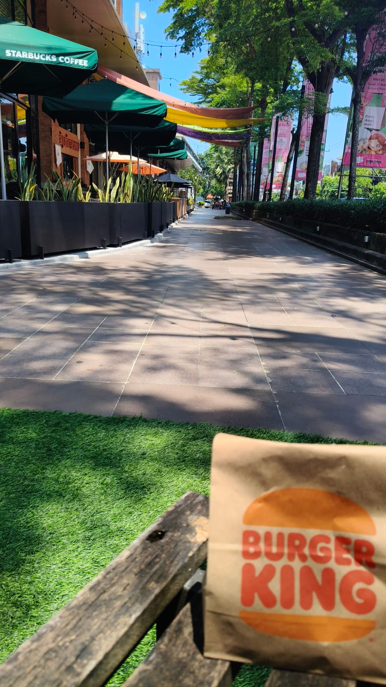
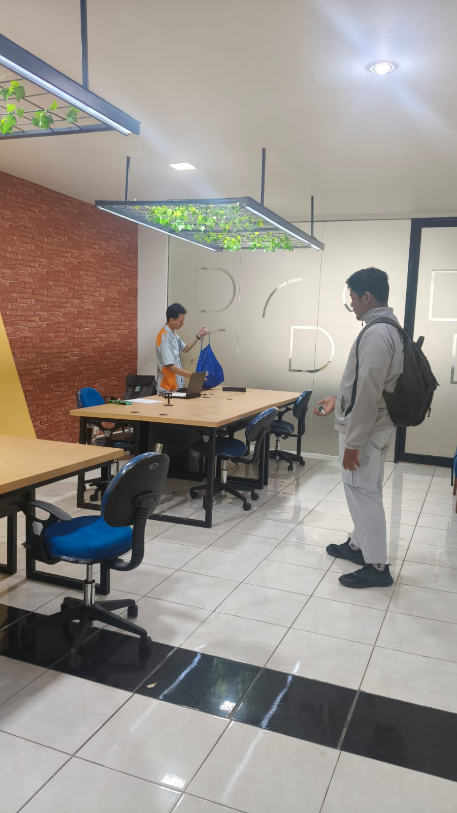
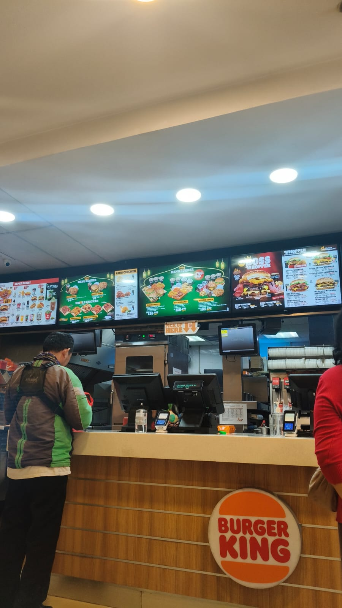
Berangkat ke Pontianak
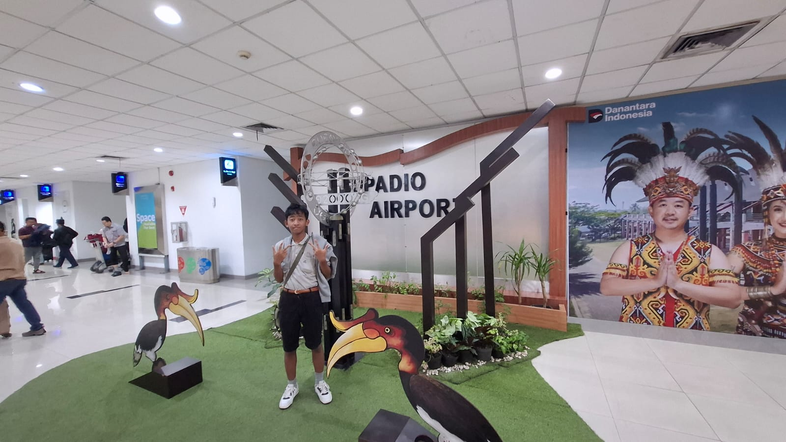
Pada tanggal 18, saya berangkat sekeluarga menuju bandara untuk terbang ke pontianak untuk mengujungi kerabat serta merayakan lebaran bersama.
Saya menginap di hotel mercure yang berlokasi di pusat kota.
Jalan jalan di Pontianak
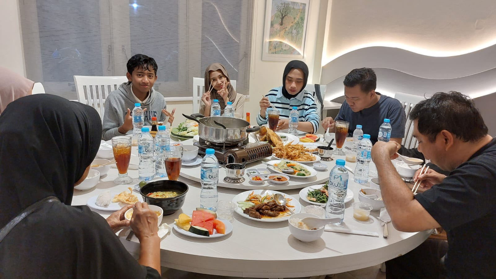
Pada tanggal 19 saya berkunjung ke ayani megamall yaitu mall terbesar kedua di kota. Jaraknya hanya 5 menitan dengan jalan kaki, kami mengelilingi area mall serta menonton
film Pelangi Di Mars di XXI, malamnya kami makan bersama keluarga besar di restoran sari bento.
Idul Fitri
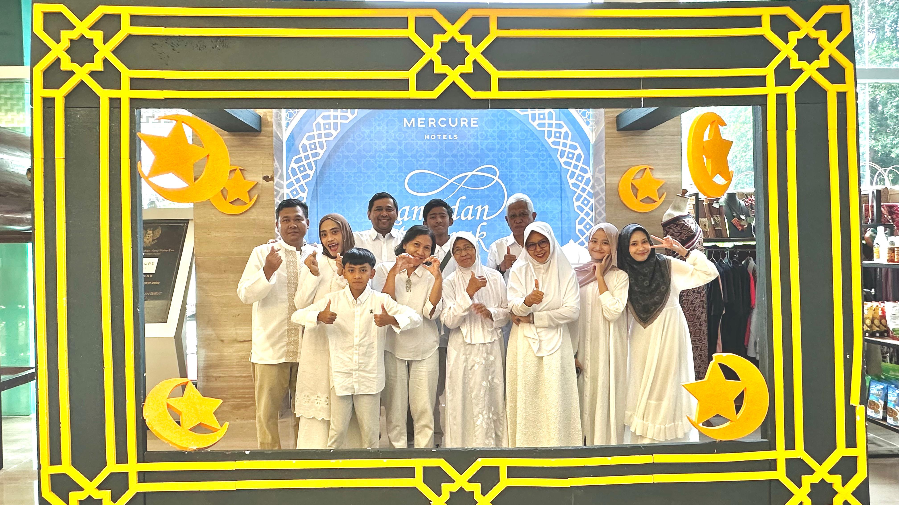
Keesokan harinya kami keliling mall lagi, lalu berkunjung ke rumah sepupu untuk makan bersama. Disana saya juga menonton takbiran. Banyak yang menyalakan kembang api
dan bahkan menembakkan meriam di area sungai.
Pulang ke Bali
Saya pulang ke denpasar tanggal 22. Dimana keesokan harinya saya pergi ke sekolah untuk membantu membuat penjor bersama teman teman. setelah itu saya hanya menghabiskan waktu
dirumah bermain game bersama teman teman
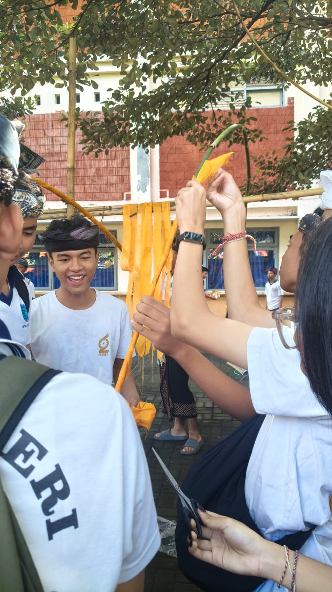
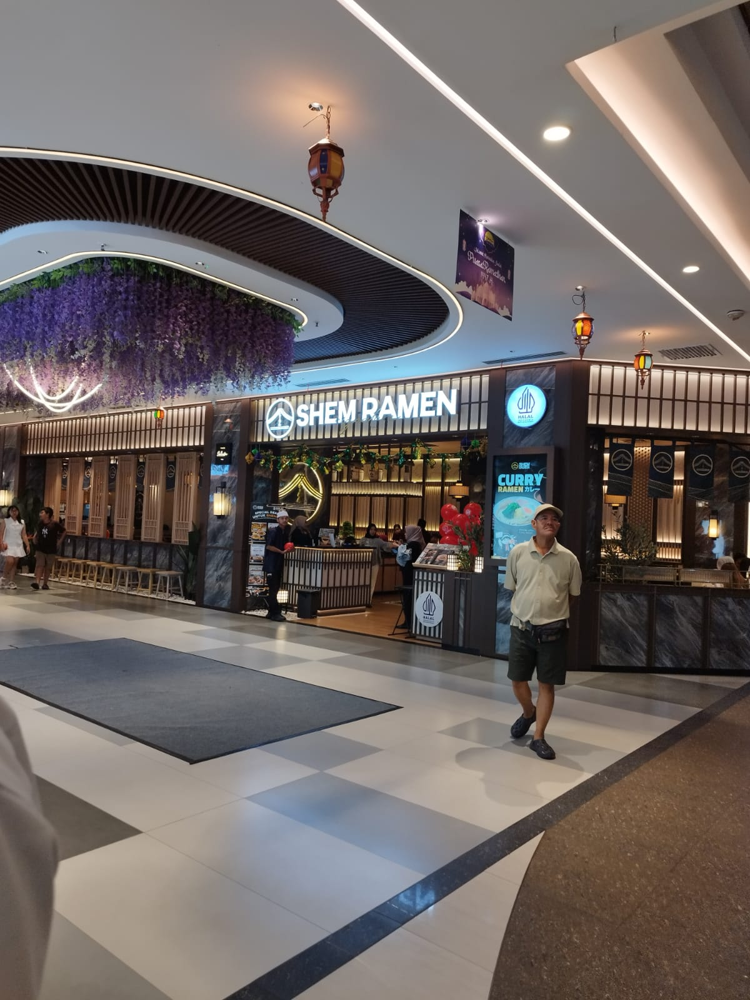
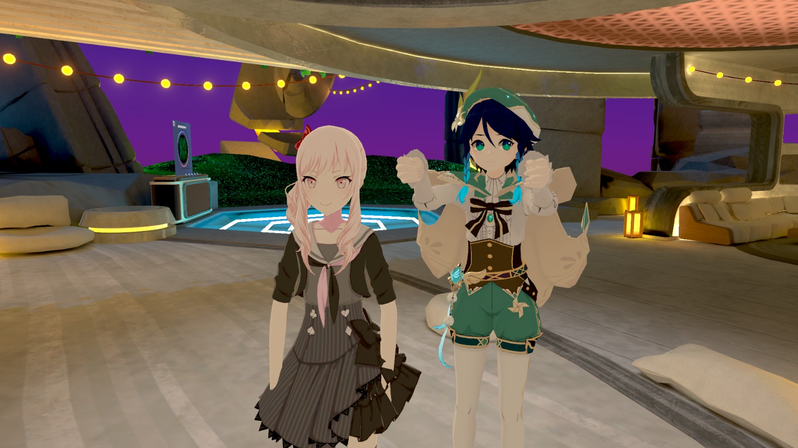
Mengunjungi Car Free day di renon
Jalan jalan terakhir yang saya lakukan adalah pada 29 Maret, saya pergi ke lapangan renon bersama teman saya untuk keliling di acara car free day.
Kami berkeliling di area bazaar serta area taman menggunakan Sepeda listrik rentalan, lalu kami nongkrong di family mart dan subwaay setempat.
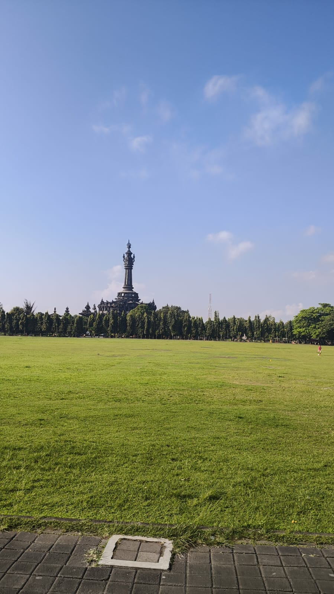

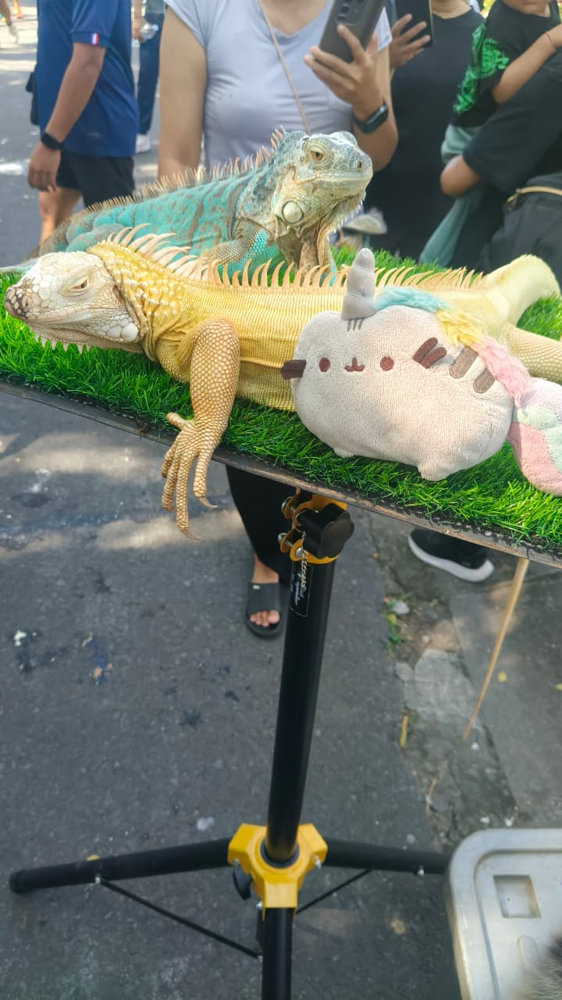